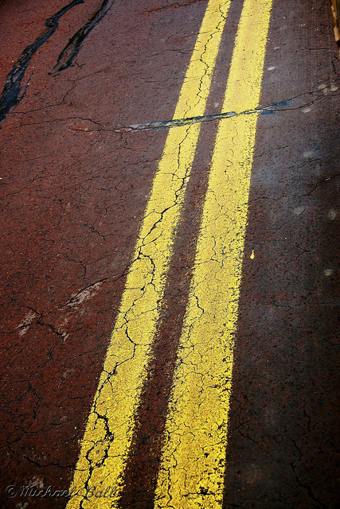

On the Road Again… on Flickr.
Via Flickr: This was made somewhere around Zion National Park in Utah, but it’s hard to pin point exactly where, however, it did have a very cool and unique reddish color!